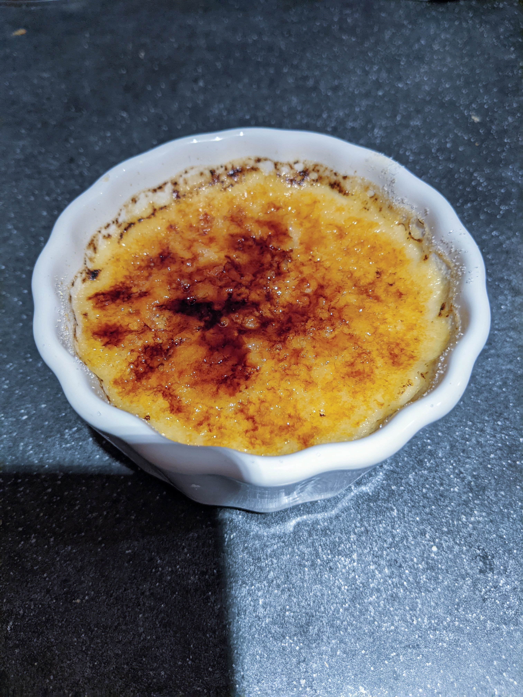

Crème Brûlée

Description
Ingredients
- 3 Cups whipping cream (heavy cream)
- 5 large egg yolks
- 150 grams of white granulated sugar
Steps
- crack eggs and drain whites, and put egg yolks into a mixing bowl.
- Add ONLY 100 grams of the sugar to the egg yolks and whisk until thoroughly mixed.
- Pour cream into a pot and heat on medium-high. As soon as cream begins to simmer, remove from heat.
- Pour 1/2 Cup of warmed cream into a measuring cup.
- Boil about 1 Litre of water and pre-heat oven to 325 F.
- Slowly (small dribble) pour the 1/2 Cup of cream into the eggs. Whisk continuously. If you don't pour slowly or whisk the whole time, eggs will scramble.
- After all the cream is poured into the egg yolk/sugar mix. Slowly pour the mixture into the rest of the warmed cream, whisking continuously.
- After the cream and egg yolk mixture is mixed, pour mixture to the top of a ramekin, leaving a small gap.
- Put the ramekins into baking dish, and add boiling water to dish, covering the ramekins 1 inch deep.
- Put the baking dish into the ovens and cook for 30-40 minutes. Start checking after 30 minutes. Edges should be firm while centre is slighly jiggly.
- After cooked, carefully remove from the water and let cool uncovered on a wire rack for at least one hour.
- After cooled, loosley cover and put in the fridge for at least 4 hours, and up to 4 days.
- Right before serving, remove from fridge and sprinkle a layer of sugar (ensure it fully covers surface). Then, use a torch to melt the sugar. Should quickly cool into a hard layer.
- Serve immediately.